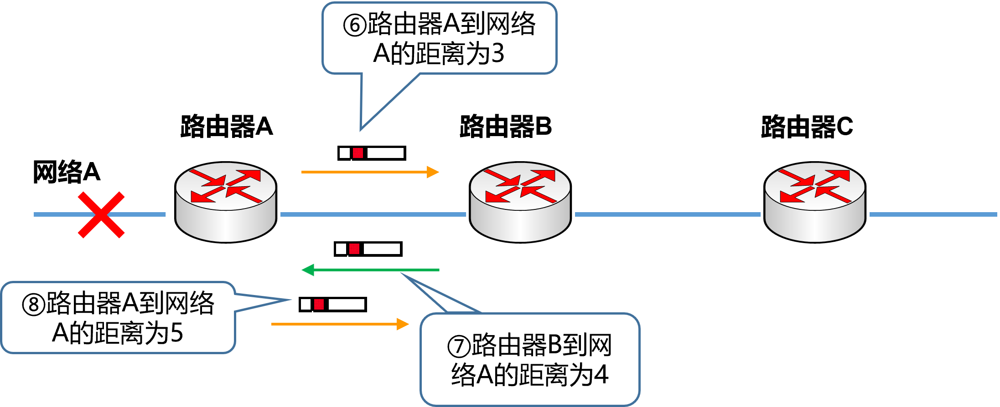
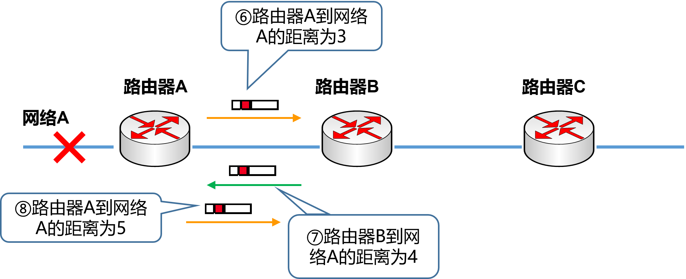
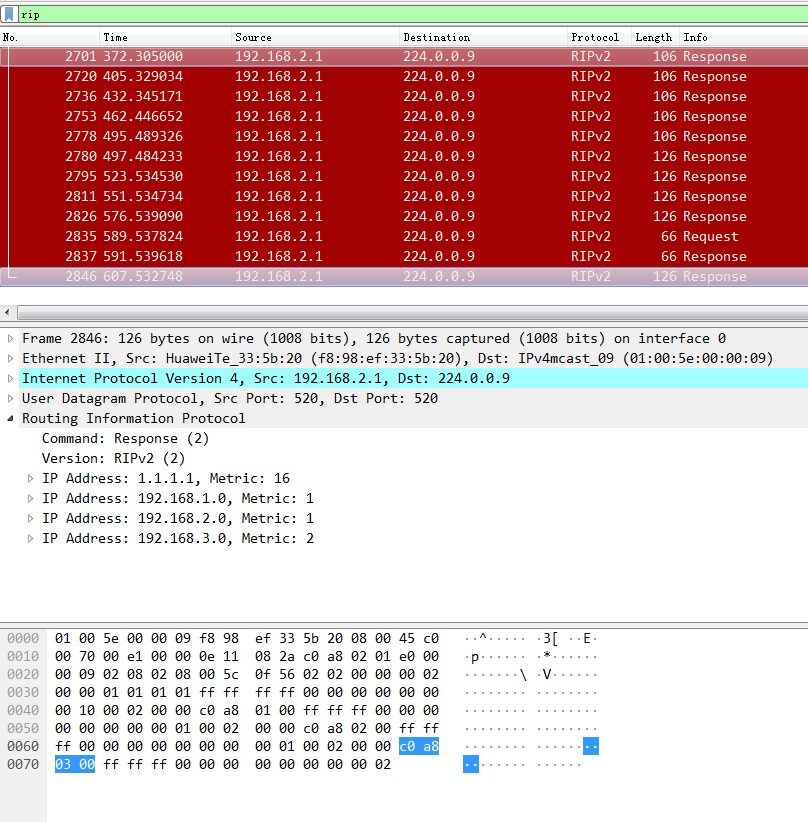

实验目的
了解动态路由协议的原理与应用。
熟悉RIP协议的特点，理解水平分割、触发更新和毒性逆转的作用。
掌握RIP协议的配置方法。
实验任务
掌握RIP的配置方法，在计算机上用Wireshark截取RIP报文，理解触发更新和水平分割对RIP收敛速度和避免环路的作用。
实验原理
RIP概要
RIP（Routing Information Protocol）是基于距离矢量算法的一种路由协议，它使用“跳数”，即指所经过的路由器的个数来衡量到达目标地址的路由距离，广泛应用于LAN。BSD UNIX系统的routed进程采用了RIP协议，由此RIP得到了迅速的普及。
RIP协议特点
RIP协议特点可归纳如下：
30秒一次，将自己所知道的路由信息广播出去。如果一个路由在180秒内未被刷，就认为网络被断开。
根据距离向量生成路由控制表。路由控制表针对同一个网络如果有两条路径，那么选择距离较短的一个。如果距离相等，通常是随机选择一个或是轮换使用。
但是，这两个特点使得RIP明显存在一些问题。如下图所示，当网络A存在通信故障时，路由器A虽然认为自己与网络A的连接已经断开了，但是它还会收到路由器B曾经获知的路由消息，这就会让路由器A误认为还可以通过路由器B到达网络A。这样就会导致无限计数（Counting to Infinity），出现路由环路。

 

为了解决这个问题，RIP采取以下两种方法：
最长跳数不超过16（16被定义成无穷大，即目标网络或主机不可达）。这个信息只保留120秒。一旦超过这个时间，信息将被删除。
采用 水平分割 （Split Horizon）方法，即路由器不在把所收到的路由信息原路返回给发送端。
然而，在环路有多余的情况下，需要很长时间才能产生正确的路由信息。在有些情况下（比如帧中继Hub-spoke网络结构、X.25等非广播多路访问网络）需要关闭水平分割，否则将无法正常传递路由信息。
为了尽可能解决这个问题，RIP又提供了毒性逆转（Posion Reverse）和触发更新（Triggered Update）机制。
毒性逆转 是水平分割的一种变型。当网络发送故障时，它不是不再发送这个消息，而是发送一个距离为16的消息。
触发更新 是指当网络发生变化时，路由器就立即发送其新的路由表，而不是等待30秒。
提示
通过上述方法，RIP的最大网络范围在16跳以内，而且路由器想要达到一个稳定的状态也需要花一段时间。如果想要明确地掌握网络结构，可以采用路由协议相对复杂的OSPF（Open Short Path First）路由协议，在本实验中不做重点介绍。
RIP报文格式
RIP协议使用UDP协议的520端口来发送和接收RIP报文。其报文格式如下图所示。

命令字(Command)：1为请求报文，2为应答报文。
版本 (Version)：指生成RIP报文时所使用的版本，RIP只有两个版本:版本1和版本2。
路由选择域 (Routing Domain)：路由域标号为0的是缺省的路由域。
地址族标识（Address Family Identifier）：报文中所携带地址的类型，提供了和以前版本的兼容性。IP协议簇对应的值为2，该字段使RIP可以用于多种不同的协议簇。
路由标记(Route Tag) ：用于传递自治系统的标号。
IP地址(IP Address)：可以是主机、网格，甚至是一个缺省网关地址。
子网掩码(Subnet Mask)：子网掩码信息是RIP协议在多种环境中变得更有用，并且允许在网络中使用变长掩码。
下一跳地址(Next Hop)：支持下一跳地址优化了在使用多种路由协议的网络环境中的路由器。
度量值（Metric）：这个值经过路由器时被递增。数量标准有效的范围是在1～15之间。
实验环境与分组
路由器2台、二层交换机2台，三层交换机1台，计算机4台，4人一组。
实验组网

IP地址表：
设备名称 |
IP地址 |
|---|---|
R1-G0/0/0 |
192.168.2.1/24 |
R2-G0/0/0 |
192.168.3.2/24 |
R1-G0/0/9 |
192.168.1.1/24 |
R2- G0/0/9 |
192.168.1.2/24 |
R1-loopback 1 |
1.1.1.1/32 |
实验步骤
登陆设备
Step1：
打开SecureCRT，点击窗口中的“快速连接”图标，如图所示：

Step2：
在弹出的窗口中，输入需通过telnet访问的设备IP（见表 ATM管理机地址表 ）和端口号，然后点击“连接”即可。

机柜编号 |
ATM管理路由器的IP地址 |
|---|---|
1 |
10.251.130.241 |
2 |
10.251.130.242 |
3 |
10.251.130.243 |
4 |
10.251.130.244 |
5 |
10.251.130.245 |
6 |
10.251.130.246 |
7 |
10.251.130.247 |
8 |
10.251.130.248 |
9 |
10.251.130.249 |
10 |
10.251.130.250 |
提示
交换机 不需要输入用户名和密码 。
路由器R1和R2的 用户名：admin，密码：Admin@huawei

Step3：
登录成功后，即进入用户视图。在用户视图下，用户可以完成查看运行状态和统计信息等功能，此时屏幕上显示:

清空配置
每次做实验前，先清空上一次的配置，本次实验需清空R1、R2、SW1、SW2、SW3的配置。
Step1：
在用户视图下，使用如下命令进行配置的清空
1reset saved-configuration //清除配置
2The device configurations will be erased to reconfigure. Are you sure?(y/n):y //输入y继续删除
3display saved-configuration //查看删除后的配置
查看删除后的配置：

Step2：
在用户视图下，使用如下命令进行重启
1reboot //重启
2All the configuration will be saved to the next startup configuration. Continue? [y/n]:n //输入n不保存到启动配置
3System will reboot! Continue? [y/n]: //输入y，继续重新启动
4display current-configuration //重启后查看当前配置

导入初始配置
R1导入下列配置
1system-view
2sysname R1
3user-interface console 0
4idle-timeout 60
5quit
6int G0/0/9
7undo ip add
8quit
9int G0/0/8
10shutdown
11quit
12quit
R2导入下列配置
1system-view
2sysname R2
3user-interface console 0
4idle-timeout 60
5quit
6int G0/0/9
7undo ip add
8quit
9int G0/0/8
10shutdown
11quit
12quit
SW1导入下列配置
1system-view
2sysname SW1
3user-interface console 0
4idle-timeout 60
5quit
6int range G0/0/1 to G0/0/4
7shutdown
8quit
9quit
SW2导入下列配置
1system-view
2sysname SW2
3user-interface console 0
4idle-timeout 60
5quit
6int range G0/0/1 to G0/0/4
7shutdown
8quit
9quit
SW3导入下列配置
1system-view
2sysname SW3
3user-interface console 0
4idle-timeout 60
5quit
6int range G0/0/1 to G0/0/4
7shutdown
8quit
9quit
导入信息步骤如下图所示： 复制以上的代码并分别粘贴入SW2、SW3。


配置三台PC的IP地址
按照下表设置PCA、PCC和PCD这三台电脑的IP地址。
计算机 |
IP地址 |
|---|---|
PCA |
192.168.2.11/24 |
PCC |
192.168.3.13/24 |
PCD |
192.168.3.14/24 |
配置路由器、交换机基本信息和计算机的网关
Step1：
按照组网图正确组网，打开机柜，把 PCB 的网线接口接到 SW1 的 G0/0/12 上。
Step2：
配置R1的基本信息
1system-view //进入系统视图
2interface G0/0/9 //进入G0/0/9接口模式
3ip address 192.168.1.1 255.255.255.0 //配置G0/0/0接口ip地址
4quit //退出接口视图
5interface G0/0/0 //进入G0/0/0接口模式
6undo portswitch //把G0/0/0默认的二层接口转为三层接口
7ip address 192.168.2.1 255.255.255.0 //配置G0/0/0接口ip地址
8quit //退出接口视图
9interface loopback 1 //配置Loopback回环接口。Loopback是一种纯软件性质的虚拟接口，该接口一旦被创建，将一保持Up状态，直到被删除
10ip address 1.1.1.1 255.255.255.255 //配置回环地址
11quit //退出接口视图
Step3：
配置R2的基本信息
1system-view //进入系统视图
2interface G0/0/9 //进入G0/0/9接口模式
3ip address 192.168.1.2 255.255.255.0 //配置G0/0/0接口ip地址
4quit //退出接口视图
5interface G0/0/0 //进入G0/0/0接口模式
6undo portswitch //把G0/0/0默认的二层接口转为三层接口
7ip address 192.168.3.1 255.255.255.0 //配置G0/0/0接口ip地址
8quit //退出接口视图
Step4：
配置三台计算机的网关
在三台PC上配置网关。注意，一台电脑只能有一个默认网关，需要把“本地连接2”的默认网关删掉，才能配置“本地连接”的默认网关。
PCA网关为192.168.2.1，PCC和PCD网关为192.168.3.1
PCA通过默认网关将发往未知网络的数据交由R1处理。同理PCC和PCD通过默认网关将数据交给R2。
Step5：
在R1上ping R2验证连通性

Step6：
在PCA上ping R1验证连通性

Step7：
在PCC上ping R2验证连通性

Step8：
在PCA上ping PCC验证连通性

配置RIP协议及查看路由表，并测试连通性
为两台路由器和三层交换配置RIP协议，并通告其网络。具体命令如下：
Step1：
在R1的系统视图下：
1 system-view //进入系统视图
2 rip //启用RIP协议
3 undo summary //关闭自动汇总功能
4 version 2 //配置RIP路由协议版本v2
5 network 192.168.1.0 //通告直连网段，在网段192.168.1.0上启动RIP
6 network 192.168.2.0 //通告直连网段，在网段192.168.2.0上启动RIP
7 network 1.0.0.0 //通告直连网段，在网段1.0.0.0上启动RIP
8 quit //退出路由配置模式
Step2:
R2-系统视图：
1 system-view //进入系统视图
2 rip //启用RIP协议
3 undo summary //关闭自动汇总功能
4 version 2 //配置RIP路由协议版本v2
5 network 192.168.1.0 //通告直连网段，在网段192.168.1.0上启动RIP
6 network 192.168.3.0 //通告直连网段，在网段192.168.2.0上启动RIP
7 quit //退出路由配置模式
Step3:
使用display ip routing-table命令在R1和R2上查看路由表信息
R1路由表:

R2路由表:

Step4：
使用ping命令测试PCA到PCC之间的连通性

触发更新和水平分割
Step1：
分别打开PCA 、PCB、PCC三台计算机的Wireshark抓取rip协议包，具体操作见三层交换中arp抓包实验。
此时查看PCA的结果如下：

PCB的结果如下：

PCC的结果如下：

此时抓的包是R1 g0/0/0组播发出的信息。
Step2：
然后在R1上使用命令 undo interface loopback1断开回环地址loopback1，四台PC都连接不到loopback1，PCA、PCB和PCC结果如下图所示。
PCA截获到1.1.1.1网段不可达:
PCB截获到1.1.1.1网段不可达:

PCC截获到1.1.1.1网段不可达:

由上图可知，到达1.1.1.1的跳数为16，因为rip协议的最大跳数为15，所以这条IP不可达。一条路有切断，全网通告。
Step3：
rip配置后，默认启动水平分割,水平分割就是此接口接收到的信息不从这个接口发回去，从上面PCB的图可以看出。重新配置好loopback1，使个路由器运行rip，正常工作。取消路由器R1和R2的水平分割功能，以R1的g0/0/9接口为例命令如下：
R1基本配置
1interface g0/0/9
2undo rip split-horizon
此时查看 PCB 上截获 R1 g0/0/9 发出的报文，可以看到多了两条来自 192.168.1.0 和 192.168.3.0 的报文。

最后，保存在PCA、PCB和PCC上截取的报文结果，分析RIP协议报文结构。